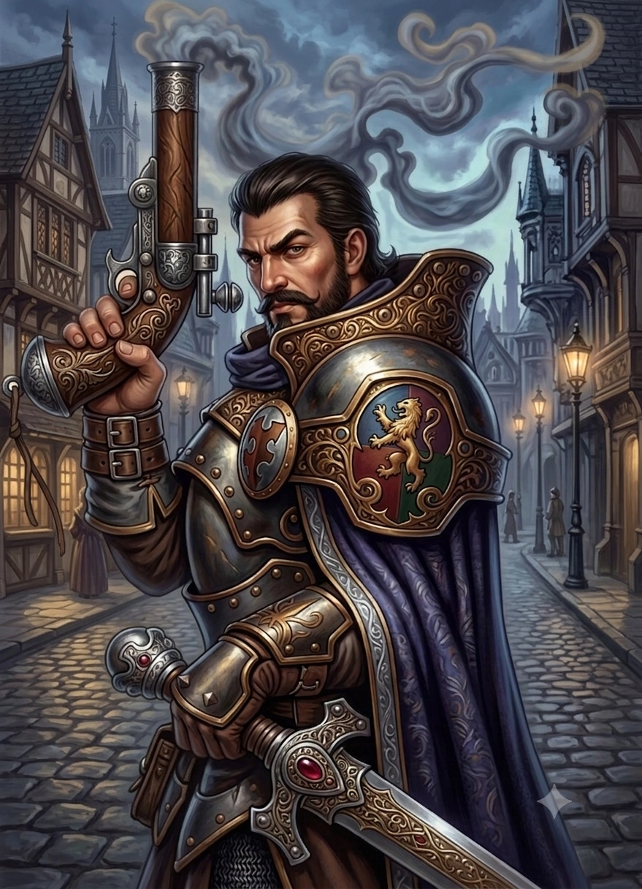
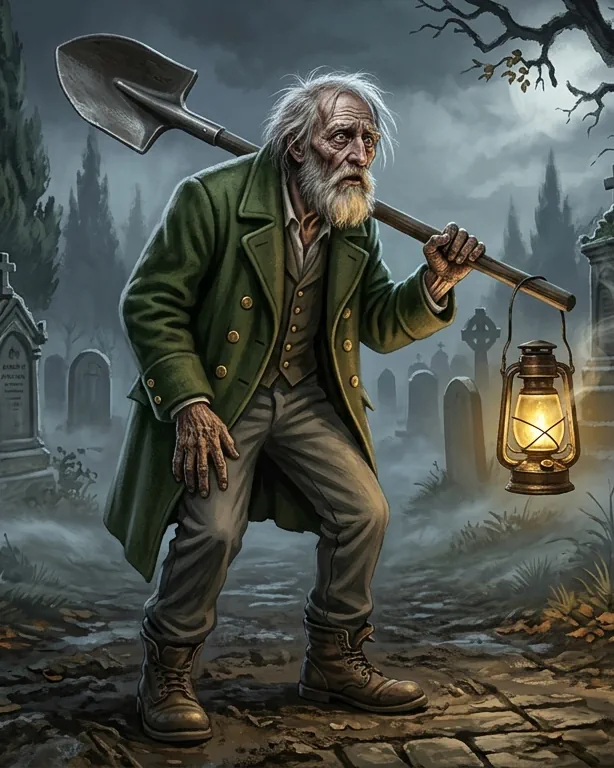
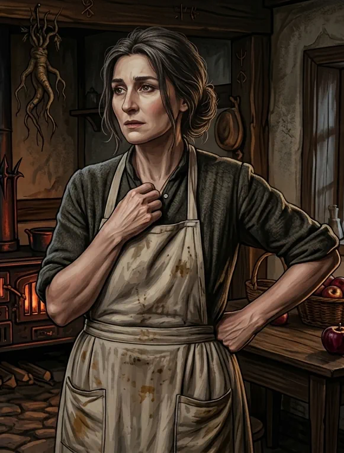
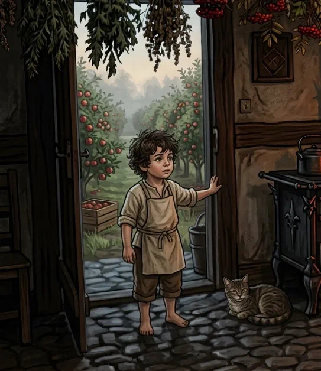
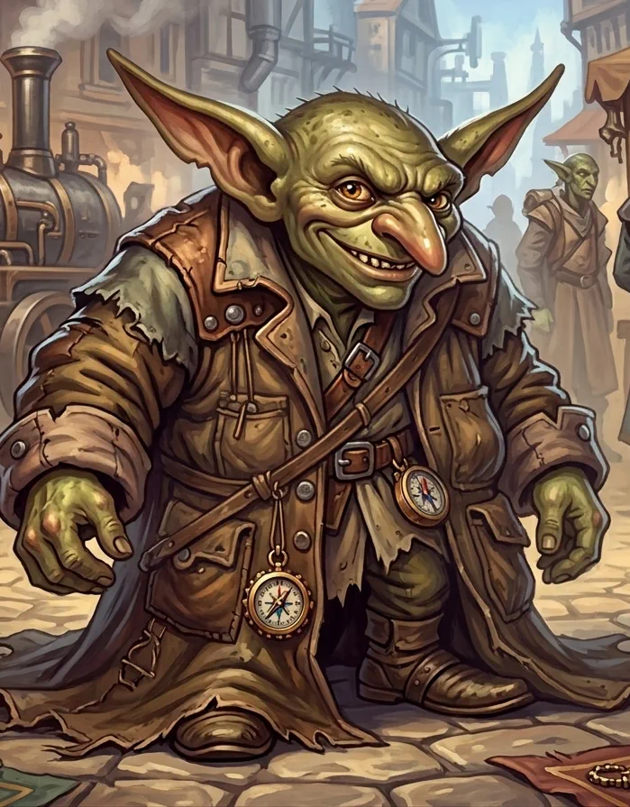
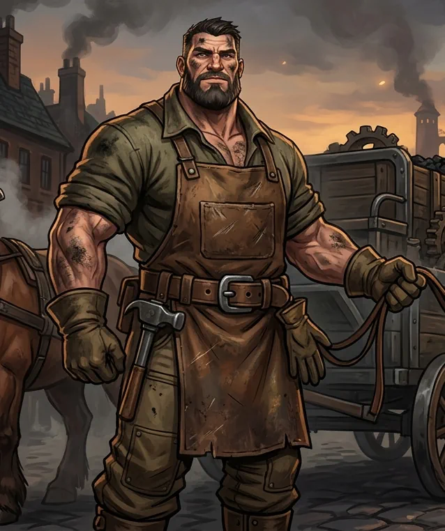

NPCs da campanha
Personagens Não Jogadores
NPCs importantes
As informações abaixo são apenas o que os jogadores conhecem até este ponto da campanha.

Gunner Wadock
Mercador que contratou o grupo para escoltar a carga até Corvis e deu início à aventura.

Padre Dumas
Clérigo de Corvis que curou o grupo e pediu ajuda para investigar os desaparecimentos no cemitério.

Alexia
Sobrinha do Padre Dumas, curiosa e observadora, que desenhou o grupo e mostrou um pequeno recado que chamou a atenção dos aventureiros.

Capitão Julian Helstrom
Oficial da Guarda de Corvis, abatido pelo luto e interessado no caso das sepulturas violadas. Ofereceu uma recompensa para quem resolvesse o mistério.

Gum Brocker
Coveiro da cidade, conhecido por ter acesso às sepulturas e por ter sido pressionado a esconder a verdade sobre o que viu.

Bena Gadock
Mulher da fazenda Gadock, receosa e supersticiosa, que confirmou que a sepultura do avô havia sido violada.

Hebber
Criança da família Gadock que afirmou ter visto o avô saindo da sepultura na chuva. O relato deixou os aventureiros em dúvida.

Mercador gobber
Vendedor misterioso que surgiu nas sombras da cidade oferecendo itens mágicos, incluindo uma bússola suspeita.

Abram
Trabalhador do distrito industrial de Corvis que teve sua carroça avariada na estrada. Ficou grato pela ajuda do grupo e presenteou Mogglewog com carvão de alta qualidade.